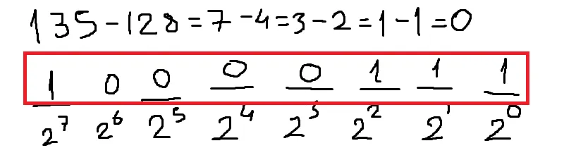
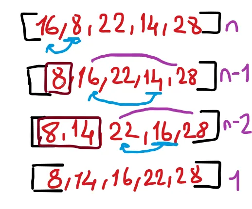
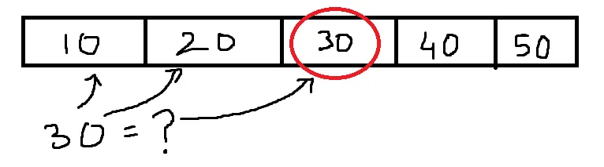
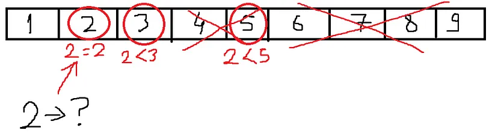
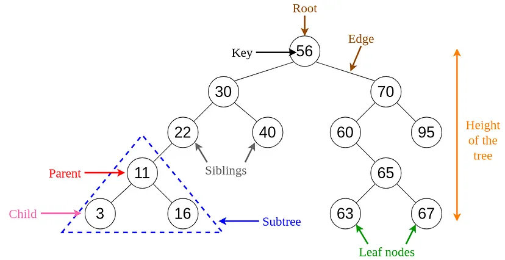

Veri Yapıları
ALGORİTMA
Günlük hayatta yaşadığımız problemlerin çözümünü adım adım gerçekleştirmemize algoritma denir. Örneğin masadaki bir bardak suyu almak için:
- Masaya doğru yürü
- Elini uzat
- Bardağı avucuna getir
- Elini sık
- Bardağı kaldır
İşlemlerinin yapılması bir algoritmadır.
BİLGİNİN BİLGİSAYARDA İFADESİ
İnsanlar kendilerini ifade etmek için diller icat etmiştir ve her coğrafyada başka şekilde diller bulunur.
Bu da demekki bir bilgi başka şekillerde ifade edilebilir. Elma meyvesi türkçede “e,l,m,a” harfleriyle ifade edilirken, ingilizcede “a,p,p,l,e” harfleriyle ifade edilir.
Bilginin bilgisayarda ifade edilmesi için ise 2’lik sayı sistemi kullanılır. Bunun sebebi bilgisayarların anlayacağı dilin elektriğin açık veya kapalı olmasından ibarettir. Bunun için transistör denilen devre elemanları kullanılır.
Burada elektriğin varolması 1, olmaması 0’ı ifade eder. Sadece bu 2 ifadeyi farklı uzunluk ve şekillerle kullanmamız sınırsız bilgiyi depolamamıza olanak sunar.
SAYI SİSTEMLERİ
Bilgisayarların 2’lik sayı sistemini kullandığını öğrendik. Peki sayı sistemleri nasıl çalışıyor?
10’luk Sayı Sistemi:
İnsanların günlük hayatta kullandığı sayı sistemine denir. Bir sayıyı ifade ederken basamaklar kullanılırız. Bulunduğumuz sayı sistemi ne ise bir basamakta o kadar ifade yapılabilir. Daha fazla şeyi ifade etmek için ise yeni bir basamak açılır ve o yeni basamak kendisinden önceki olan basamağın bulunduğu sayı sistemi katıdır. Örnekle açıklayalım:
10’luk sayı sisteminde bir basamağa 0’dan 9’a kadar 10 tane rakam yazabiliriz. Eğer 9’dan daha fazla bir değer yazmak istiyorsak yeni bir basamak açarız ve önceki basamağımızı tekrar saymaya başlarız. Bu noktada 9’dan bir sonraki sayı 10’dur. 10’dan ileri sayarsak: 11, 12, 13, …, 19 ve birler basamağı yine dolduğunda solundaki basamak artar kendisi ise tekrar 0’a geri döner. Sayımızı 20 oldu. Bu böyle 99’a kadar gittiğinde onlar basamağı da dolar ve 3. Basamak olan yüzler basamağı açılır, kendinden önceki basamak sıfırlanır ve sayımız 100 olur. Bu böyle devam eder.
Her sayı sisteminde basamakları üstel olarak ifade edebiliriz. Örneğin:
- Birler Basamağı: 10⁰*n=1*n
- Onlar Basamağı: 10¹*n=10*n
- Yüzler Basamağı: 10²*n=100*n gibi (n=basamaktaki rakam)
2’lik Sayı Sistemi:
Sayı sistemlerinin mantığını yukarıda belirttik. Bu mantık her sayı sisteminde geçerlidir. Şimdi bu işlemleri 2’lik sayı sisteminde gösterelim.
2’lik sayı sisteminde bir basamağa 2 rakam yazılabilir: 0 veya 1. Eğer 1’den daha fazla şey ifade etmek istersek yeni bir basamak açılır ve bir önceki basamak sıfırlanır. Sayımız 10 oldu. Daha sonrasında 11, 100, 101, 110, 111, 1000 diye gider. Sayı sistemi ne kadar düşükse ifadeler o kadar uzar.
2’lik Sayı Sistemini 10’luk Sayı Sistemine Çevirme
Bunun için 2’lik sayı sistemini üstel olarak ifade etmek yeterlidir. Örneğin:
- Birlik Basamak: 2⁰*n=1*n
- İkilik Basamak: 2¹*n=2*n
- Dörtlük Basamak: 2²*n=4*n gibi (n=basamaktaki rakam)
Burada (101)2 ifadesi (5)10 ‘e eşittir.
10’lik Sayı Sistemini 2’luk Sayı Sistemine Çevirme
Bunun için 10’luk sistemdeki sayının içinde 2’nin üstel ifadelerine bakılır. Eğer varsa o basamağa 1 konulur, yoksa 0 konulur:
Burada (135)10 ifadesi (10000111)2’e eşittir.
SAYISAL OLMAYAN VERİLERİN TUTULMASI
Bilgisayarlarda sayıların 2’lik sistem ile ifade edildiğini öğrendik peki ya harfler?
İnsanlar harfleri ifade edebilmek için bazı sayıları harflerle ilişkilendirmiştir. En yaygın kullanılan alfabelendirme ASCII’dir. Örneğin ASCII’ye göre A harfi 65 sayısına denktir.
VERİLERİN TUTULMASI
Bilgisayar dilinin 0 ve 1’lerden oluştuğunu öğrendik. Yani bu bizim her türlü verimizin 0 ve 1’lerden oluştuğunu gösteriyor. Peki bu veriler nasıl tutuluyor?
Bildiğimiz gibi bilgisayarlarımızın bir depolama alanı var ve verilerimizi bu alanlarda saklıyoruz. Verilerimiz arttıkça bu alan azalıyor.
Verilerimizin anlamlı olması için 0 ve 1’lerin sayısının fazla olması gerekir. Bu verilerin en küçük yapı taşı bitlerdir. Her bit bir tane 0 veya 1’e denktir. Yani bir bitin 2 olası sonucu vardır.
8 bitin yan yana gelmesiyle bir byte oluşur. Buradan bir byte’ın 2⁸=256 farklı ifadesi olduğu anlamına gelir.
ÖZYİNELEME
Özyineleme, bir problemin tekrar tekrar küçük parçalara bölünerek çözülmesine denir. Problem küçüle küçüle bir noktada bitecek ve sonuç oluşacaktır.
En yaygın özyineleme örneği faktöriyel konusudur. Örneğin 5!’i hesaplamak istersek 5*4*3*2*1 işlemini hesaplamalıyız. Fakat bu soru özyinelemeli şekilde çözülürse aşağıdaki gibi olur:
- 5*4!
- 5*4*3!
- 5*4*3*2!
- 5*4*3*2*1!
Burada 5! küçüle küçüle en son 1!’e inmiş ve 1!’den sonra küçülecek başka parça kalmayınca problem çözülmüştür.
Bunun günlük hayatta ne önemi var diyebilirsiniz fakat programlamada özyinelemeli fonksiyonlar yani kendi kendini çağıran fonksiyonlar zamandan tasarruf etmemizi sağlar.
DİZİLER
Elimizde birbiriyle alakalı veriler olsun ve bu verileri toplu şekilde tutmak istiyoruz. Bunun için 2 tür yapımız vardır: diziler ve listeler
Örneğin bir sinemadaki arkadaş grubunun koltuk numaralarını toplu bir şekilde tutmak istiyoruz. Bu numaraları bir dizide tutabiliriz. Bu dizinin elemanları hafızada yan yana durur ve bu elemanlara direkt ulaşılabilir.
İşin dezavantajı ise diyelim ki gruba yeni bir arkadaş geldi. Dizilerde dizinin boyutu aşılamaz çünkü elemanlar hafızada yan yana dizilmiştir ve etrafında yer kalmamıştır. Bu yüzden bütün grup dizisinin yeni ve daha büyük bir diziye aktarılması ve yeni gelen arkadaşın da bu yeni diziye eklenmesi gerekir. Bu bir zaman kaybıdır.
Bu sorunu çözmek için dinamik diziler kullanılabilir. Fakat dinamik dizilerin de dezavantajları vardır. Dinamik diziler yeni bir eleman gelmesine hazırlanmak için boş elemanlara sahiptir. Yeni bir eleman geldiğinde boş yere tutulan elemanlara yerleşir ama yeni bir eleman gelmezse boş yere alan kaplar. Bu da bir alan kaybıdır.
BAĞLI LİSTELER
Bağlı listeler, dizilerin dezavantajına farklı bir bakış açısı sağlar. Bağlı listelerde listenin elemanları yan yana durmak zorunda değildir. Örneğimizden devam edersek sinemaya yeni gelen arkadaş salonda istediği boş bir yere oturabilir.
Peki bu dizinin elemanlarına nasıl ulaşılır? Sonuçta bütün elemanlar farklı yerdedir. Bunun için listenin elemanları kendisinden bir sonraki elemanın yer bilgisini tutar. Bu sayede bağ kopmaz.
DİZİLER VS LİSTELER
- Dizilerde her elemana eşit sürede erişilirken listelerde herhangi bir elemana ulaşmak için 1. Elemandan başlayıp istenen elemana kadar tek tek ilerlenmelidir. Çünkü herkes sadece önündeki elemanın yerini bilir.
- Diziler sadece elemanlardan oluştuğu için daha az yer kaplar. Listeler hem elemanları hem de elemanların yer bilgisini tuttuğu için daha fazla alan kaplar.
- Eğer çok fazla ekleme, silme, taşıma işlemi yapılmıyorsa diziler kullanılır fakat tam tersi durumlarda listeler kullanılır.
LİSTELERDE ELEMAN EKLEME VE ÇIKARMA
Listelerde her elemanın önündeki elemanın yerini tuttuğunu öğrenmiştik. Liste 1. Elemandan başlayıp sonuncu elemana kadar böyle tren gibi birbirine bağlıdır. Sonuncu elemanın önünde bir şey olmadığı için adres değişkeni null’dır.
Eğer bu listenin sonuna bir eleman eklemek istersek sonuncu elemanın null olan adres değişkenine eklenecek olan elemanın adresi yazılır. Bu sayede listeye yeni bir eleman eklenmiş olur. Yeni eleman artık sonuncu eleman olduğu için adres değişkeni null’dır.
Peki listenin ortasına yeni bir eleman nasıl eklenir? Mantıken bu yeni eleman, 2 elemanın arasına yerleşmelidir. Bunun için gerideki elemanın adres değişkeni yeni elemanın adresi ile değiştirilir. Yeni elemanın adres değişkeni ise öndeki elemanı gösterir.
Listede silme işlemi yapmak için silinecek elemanı gösteren bir önceki elemanın adres değişkeni, silinecek elemanın bir önündeki elemanı göstermelidir. Bu sayede silinecek eleman açıkta kalır ve kullanılamaz hale gelir.
STACK (YIĞIN)
Stack yapısı diziler veya listeler ile yapılan bir eleman topluluğudur. Bu yapının mantığı LIFO(last in first out) ile gösterilir. Yani bu yapıda son giren eleman ilk çıkar.
Örnek olarak bir koliye konulan kitaplara bakarsak ilk konulan kitap en aşağıda kalır ve ulaşılamaz. Fakat koli dolduğunda son giren kitap daha sonra koli açıldığında ilk çıkan kitaptır.
Bu yapıda eleman sadece baştan eklenir, ortadan veya sondan eleman eklenemez. Eleman ekleme işlemine push, çıkarma işlemine pop denir.
QUEUE (KUYRUK)
Kuyruk yapısı da diziler ve listeler ile oluşturulan eleman topluluğudur. Bu yapının mantığı ise FIFO(first in first out) ile gösterilir. Yani ilk giren ilk çıkar.
Örnek olarak bir banka kuyruğu verilebilir. Sırayı oluşturan yani ilk eleman işini bitirince yapıdan çıkan ilk insandır.
Bu yapıda da ortadan eleman ekleme veya silme yapılamaz. Eleman sondan eklenirken, baştan silinir. Eleman ekleme işlemine enqueue, silme işlemine dequeue denir.
HASH TABLE
Diyelim ki elimizde ürünler ve fiyat listesi var ve bunlara hızlıca erişmek istiyoruz. Bunun için key-value yapısı kullanılır.
Key-value prensibine sahip yapılarda elimizdeki verilerin değerini hızlıca bulmak için veri bir fonksiyondan geçer ve bir index(eleman yeri) numarası verir. Bu index ile verinin değeri dizide hızlıca bulunur.
Burada verinin girdiği fonksiyona Hash Function, verilerin değerlerinin bulunduğu diziye ise Hash Table denir.
HASH FUNCTION
Yukarıda denildiği gibi verinin girdiği fonksiyona Hash Function denir. Hash Function’ın geçerli bir index numarası vermesi için bazı kurallar vardır:
- Her verinin index numarası farklı olmalıdır.
- Bir verinin bir index numarası olmalıdır.
- Index numarasının Hash Table uzunluğundan fazla olmamalıdır.
HASH COLLISION
Yukarıdaki şartların gerçekleşmesi için Hash Function’ın kaliteli olması gerekir. Aksi takdirde hatalar meydana gelir. Örneğin farklı verilerin aynı değere karşılık gelmesine Hash Collision denir. Yani 2 farklı veri fonksiyona giriyor ama sonuç aynı çıkıyor.
Bu duruma çare olarak aynı index numarasını bir listeye dönüştürebiliriz ve bu index numarasına birden fazla veri atayabiliriz. Fakat bu Hash Table konusunun temeli olan hız faktörünü es geçiyor. Çünkü listelerde elemanlara ulaşmak yavaştı.
Bunun için Hash Function’ın aynı index numarasını vermeyecek şekilde tasarlanması önemlidir.
ALGORİTMA ANALİZİ
Elimizde bir problem var ve çözülmesi gerek. Bu problemlerin çözüm aşamalarına algoritma denir. Fakat her insan probleme farklı çözümler geliştirebilir. Bu noktada hangi çözümün daha iyi çalıştığını belirlemeye algoritma analizi denir.
Bilgisayarda bir problemi çözen algoritmayı tasarlamak için 3 etkene bakılır:
- Algoritmanın kurulması için gereken zaman
- Kurulan algoritmanın uzunluğu
- Algoritmanın çalışma süresi
Bu esnada en iyi algoritmayı seçmek için bazı faktörlerin bağımsız olmasına dikkat edilmesi gerekir.
Örneğin bir algoritma her cihazda farklı hızda çalışabilir. Bunun için algoritma geliştirilirken çalışma süresinin aynı cihazda test edilmesi önemlidir.
Ya da bir algoritma farklı programlama dillerinde daha uzun veya daha kısa yazılabilir ya da çalıştırılabilir. Bu faktöre de dikkat edilmelidir.
Bu 2 faktörden bağımsız algoritma kurmak için büyüme hızına bakılabiliir. Yani aynı cihazda ve aynı programlama dilinde çalışan algoritmaların farklı değerlerde çalışma süresine bakmak en iyi algoritmayı seçmek için bir seçenek olabilir.
RAM MODELİ
Algoritmaların her cihazda farklı sürede çalıştığını öğrendik ve bunun bir algoritma analizi olamayacağını söyledik. Peki ya bütün algoritmaları aynı cihazda kullansaydık?
Bu cihaz algoritmaları karşılaştırmak için bir araç olabilirdi. Algoritmada gerçekleşen işlemlere birer birim zaman tanımlasarsak algoritmaları birbiriyle karşılaştıracak ölçüye sahip olurduk. İşte buna RAM Modeli denir.
ZAMAN KARMAŞIKLIĞI
Bir problemi çözmek için algoritmalar geliştirilir ve algoritma sürecinde bu problem çözülür. Fakat bu algoritmaya farklı problemler verildiğinde çözme süresi probleme göre değişiklik gösterir. Bazı problemleri daha uzun sürede çözerken bazılarını daha kısa sürede çözer. Algoritma tasarlanırken bu durum dikkate alınır.
Algoritma çalışma süresine göre 3’ ayrılır: En iyi zaman, ortalama zaman ve en kötü zaman.
- En İyi Zaman: Bu durumda algoritma problemi en hızlı şekilde çözer.
- Ortalama Zaman: Bu durumda algoritmaya sunulan problemlerin çözüm süresinin ortalaması alınır. Burada dikkat edilen ortalama zamanın en iyi ve en kötü zamanın ortası olmamasıdır. Çünkü bazen problemlerde kolay olanlar çoğunluktayken bazen zor olanlar çoğunluktadır. Bu durumda ortalama zamanı bulmak zorlaşır ve önemleşir.
- En Kötü Zaman: Bu durum yaşanacak en uzun zamandır ve şirketler algoritma tasarlarken bu duruma en çok dikkat eder.
Big O Notation
Bir algoritmanın problemleri çözme süresine göre sınıflandığını gördük. Peki ya çözme şekli?
Algoritma bir problemi farklı şekillerde çözebilir. Buna Big O Notation denir. Bu yapıda algoritmanın çözüm şekli denklem şeklinde yazılır ve O(n) ile gösterilir. Burada n parametredir.
Örneğin bir sözlükte z harflerine sayfa sayfa gitmek en kötü zaman ve O(n) yani doğrusal olurken, önce sözlüğü ortadan açmak daha sonra z’nin sağda mı solda mı olduğunu kontrol etmek ve z’nin olduğu kısmın tekrar yarısını açmak ve bu şekilde gitmek daha hızlı bir çözüm şeklidir. Bu yöntem logaritmik olarak gittiği için O(logn) ile gösterilir.
Farklı O grafikleri:
O denklemi çizilirken denklemde parametre, en büyük üs seçilir. Örneğin x²+x+5 denklemi O(n²) olarak çizilir. Diğer terimler görmezden gelinir.
SORTING (SIRALAMA)
Bir dizi veya listede verilerin belirli bir kurala göre sıralanması verilere erişimi kolaylaştırır. En popüler sıralama çeşitleri büyükten küçüğe, küçükten büyüğe veya alfabeye göre sıralamalardır. Sıralama yapmanın faydaları:
- Arama: Bir veriyi aramak için dizileri veya listeleri sıralamak işleri hızlandırır.
- Birbirine Yakın Elemanları Bulmak: Eğer art arda olan verileri bulmak istiyorsak diziyi veya listeyi sıralayabiliriz.
- Aynı Elemanları Bulmak: Eğer birden fazla aynı veriyi bulmak istiyorsak diziyi veya listeyi sıraladığımızda otomatik veriler ortaya çıkacaktır.
- Mod Bulma: Dizide veya listede en çok bulunan elemanları bulmak için sıralama yapmak işleri hızlandırır.
SELECTION SORT
En basit sıralama algoritmalarından biridir. Bir dizideki elemanları küçükten büyüğe sıralamak için kullanılır. Aşağıdaki örneğe bakalım:
Elimizde bir dizi ve içinde rastgele elemanlar var. Bu elemanları sıralamak için:
- Dizideki en küçük eleman bulunur ve yeri ilk sıradaki eleman ile değiştirilir.
- Artık ilk sırada en küçük eleman olduğu bilindiğinden ilk elemana bakılmaz. İlk eleman hariç dizideki en küçük eleman 2. Sıradaki elemanla yer değiştirir.
- Bu böyle devam eder ve bütün dizi sıralanır.
Bu algoritmadaki işlem sayısına bakarsak 1. Aşamada en küçük elemanı bulmak için bütün dizi taranır. Yani dizinin eleman sayısı(n) kadar işlem yapılır. Daha sonra ilk elemana bakılmadığı için n-1 tane, daha sonra n-2 tane ve böyle son elemana kadar işlem yapılır. Bu işlemleri toplamak için 1’den n’e kadar sayılar toplanır yani (n*(n+1))/2=(n²+n)/2. Bu da O(n²) ile gösterilir.
MERGE SORT
Selection sort algoritmasının O(n²) ile çalıştığını öğrenmiştik. Bu dizinin eleman sayısı arttığında her seferinde dizi tekrar tarandığı için büyük bir zaman kaybıdır.
Merge sort algoritmasının temeli ise diziyi önce parçala ve sonra sıraladır. Aşağıdaki örneğe bakalım:
Elimizdeki dizide rastgele elemanlar var. Bunun selection sort ile nasıl sıralandığını öğrendik. Merge sort’ta ise 2 aşama vardır:
- Dizinin elemanları tek haneye gelecek şekilde hep 2’ye bölünür. En sonda her eleman tek kalır.
- Tek kalan elemanlar önceki kümeleriyle sıralanmaya başlar. Dizi aynı bölündüğü gibi toplanmaya başlar fakat toplanırken sıralanır.
Böyle bakıldığında selection sort çok daha kolay gibi gözüküyor fakat verim olarak merge sort daha verimlidir. Çünkü dizi toplanmaya başlayıp sıralanırken eleman çok daha az veriyle karşılaştırılır. Oysaki selection sort’ta her eleman için dizi sona kadar karşılaştırılırdı.
İşlem sayısına bakarsak dizi sürekli 2’ye bölündüğü için logaritmik bir artış olur. Ayrıca dizi her birleştiğinde n kadar işlem yapılır. Yani bu algoritma O(n*logn) ile gösterilir. Bu O(n²)’den çok daha hızlıdır.
QUICK SORT
Quick sort mantık olarak merge sort’a benzerdir. Önce diziyi parçalar, sonra birleştirirken sıralar. Farkı ise diziyi rastgele ortadan 2’ye parçalamaz.
Önce dizide bir eleman seçelir ve ortaya konulur. Bu elemandan küçük olanlar sola, büyük olanlar sağa yerleştirilir. Daha sonra oluşan dizilerden yine elemanlar seçilir ve küçükler sola, büyükler sağa şeklinde diziler oluşur. Bu böyle herkes tek eleman kalacak şekilde devam eder. Dizide herkes tek eleman kaldığında zaten herkes sıralanmış olur. Aşağıdaki örneğe bakalım:

Elimizdeki dizide rastgele elemanlar var. Bunu quick sort ile sıralamak için önce bir eleman seçilir. Buna pivot denir. Bu örnekte 3 seçilmiş. Daha sonra 3’ten küçük olanlar solda, büyük olanlar sağda bir dizi oluşturur. Bu diziler de kendi arasında bir pivot seçer ve aynı işlem tekrar eder. Herkes tek kaldığında zaten dizi otomatik sıralanmış olur.
Quick sort’un işlem sayısı değişkenlik gösterir. Çünkü seçilen pivot ortada olmaz ise dizi ortadan 2’ye bölünemez. Bir taraf daha uzun olur.
Dizilerin tam ortadan bölündüğü durumlarda algoritma O(n*logn) ile ifade edilirken ortadan bölünemediği zaman O(n²) ile ifade edilir.
Quick sort, ortalama olarak merge sort’tan daha hızlıdır. İkisi de O(n*logn) ile ifade edilse de katsayı farkından dolayı quick sort daha hızlıdır.
SEARCHING (ARAMA)
Gün geçtikçe bilgisayarlarımızda daha çok veriyi depolamaya başladık. Bu büyük veri havuzunda istediğimiz verileri bulmak ise güçleşti. Bu problemi çözmek için ise searching(arama) algoritmaları geliştirildi.
LINEAR SEARCH
En basit arama algoritmalarından birisidir. Dizinin 1. elemanından başlayıp istenilen veriye ulaşıncaya kadar arama yapan bir algoritmadır.

Dizide içeriği 30 olan elemanı bulmak için 1. Elemandan başlanıp ilerlenmiştir. İstenen eleman 3. Eleman olduğu için eleman bulunmuştur.
İşlem sayısına bakacak olursak algoritmanın adından da anlaşılacağı gibi O(n) ile ifade edilir.
BINARY SEARCH
Bu arama algoritmasını uygulamak için dizimizin sıralı olması gerekiyor. Sıralanmış dizide istediğimiz eleman ile dizinin ortasındaki eleman karşılaştırılır. Eğer istediğimiz eleman daha küçükse dizinin sol yarısına, değilse sağ yarısına bakılır. Yeni dizide tekrar ortadaki eleman ile istediğimiz eleman karşılaştırılır ve buna göre dizi yarıya ayrılır. Bu şekilde istediğimiz elemana gelene dek devam eder. Aşağıdaki örneğe bakalım:

Yukarıdaki dizide 2 elemanını aranıyor. Bunun için ortadaki eleman yani 5 ile bir karşılaştırma yapılır. 2, 5’ten küçük olduğu için sol yarıya bakılır. Daha sonra ortadaki eleman 3 ile karşılaştırma yapılır. 2, 3’ten küçük olduğu için sol yarıya bakılır. Ortanca eleman, aradığımız eleman olduğunda ise algoritma sonlanır.
İşlem sayısına bakılırsa dizi her seferinde 2’ye bölündüğünden algoritma O(logn) ile ifade edilir.
BINARY SEARCH TREE
Bu yapı ağaç şeklinde bir listeden oluşuyor. Bu yapı sayesinde hem searching yapılırken hem de eleman ekleme gibi işlemler aynı anda yapılabiliyor. Aşağıdaki örneğe bakalım:

Yukarıdaki yapıya bakıldığında listenin 1. Elemanı kök olarak adlandırılıyor. Kökten büyük elemanlar sağa kök salarken, küçük elemanlar sola kök salıyor. Mantık aşağıdaki elemanlar için de geçerlidir. Kendinden büyük elemanlar sağa, küçük elemanlar sola uzar.
Bir eleman eklenmek istendiğinde 1. Elemandan başlayıp aşağıya kendine bir yer buluncaya kadar devam eder ve yerleşir.
Bir eleman aranmak istendiğinde de 1. Elemandan başlayıp aşağıya doğru o eleman bulunana kadar sorgulama yapılır.
İşlem sayısına bakarsak eğer ağaç simetrik bir şekilde 2’ye ayrılarak aşağı inmişsse O(logn) ile ifade edilir. Eğer simetrik olmazsa ve bir tarafa doğru yoğunluk varsa O(n) ile ifade edilir.
Binary Search Tree bir liste gibi çalıştığından elemanlara erişim diziler kadar hızlı olmaz.